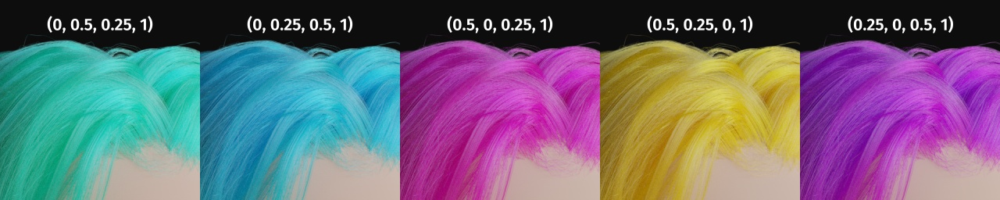
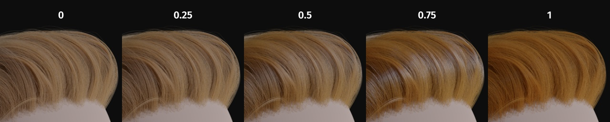

原理化毛发 BSDF
仅限 Cycles
原理化毛发 BSDF 是一个基于物理的，易于使用的着色器，用于渲染头发和毛发。
Tip
逼真的头发应该在每条发股间具有些许差异。该着色器利用 随机色彩 和 随机粗糙度 来实现上述效果。实现方式是将 黑色素/粗糙度 的比值重新映射到 \(色彩/糙度 \pm 随机化\%\) 。
输入
- 颜色
发股的RGB颜色。仅在直接着色模式下起作用。
Hint
使用以下公式将所选颜色转换为吸收系数（参见 4.2 章 [CBTB16]）：
\[\sigma_{a} = \frac{\ln(Color)} {\left(5.969 - 0.215\beta_{N} + 2.532\beta_{N}^{2} - 10.73\beta_{N}^{3} + 5.574\beta_{N}^{4} + 0.245\beta_{N}^{5}\right)^{2}}\]在指定了径向粗糙度的情况下，\(\beta_{N}\) 是应用随机化后头发的径向粗糙度。
 使用直接着色参数化头发颜色。（顶部为RGB参数。）
- 黑色素
色素的绝对值。范围 \([0, 1]\) 对应于 \([0\%, 100\%]\) 。
Hint
这是对下面基础指数函数的线性映射：
\[melanin\_qty = -\ln(\max(1.0 - Melanin, 0.0001))\]
黑色素。
- 黑色素红
褐黑素与真黑素的比例。范围 \([0, 1]\) 对应于 \([0\%, 100\%]\) 。
Hint
The ratio formula is: \(eumelanin = Melanin*(1.0-MelaninRedness)\), \(pheomelanin = Melanin*MelaninRedness\).
在随机化后，得到的最终值会通过下式转化为吸收浓度（参见 6.1 章 [EFHLA11]，范围调整为 \([0, 1]\)）：
\[\begin{split}\sigma_{a} = eumelanin * \left[\begin{matrix} 0.506 \\ 0.841 \\ 1.653 \\ \end{matrix}\right] + pheomelanin * \left[\begin{matrix} 0.343 \\ 0.733 \\ 1.924 \\ \end{matrix}\right]\end{split}\]
黑色素红。
- 染色
生成染发效果。不受随机化的影响。可以通过将颜色设置为白色来禁用它。
Hint
计算方式是通过将上面的 颜色 转换并添加到黑色素浓度的吸收系数中。

染色效果。黑色素值设定为 0.1，其余为RGB数值。
- 吸收系数
吸收系数 \(\sigma\) 。
- 粗糙度
指定在发干方向上平滑的闪光量。值过低会使头发平滑到看起来几乎是金属的，使闪光看起来像 光斑 ；而将其设置得太高将导致兰伯式的外观。

糙度。
- 径向粗糙度
指定在头发正常方向上平滑的闪光量。值过低会集中闪光；当它设置得太高时，光线会分散到线的宽度上。
Hint
从数学层面上理解为：该参数可以映射到逻辑分布的比例因子 \(s\) 上 (参见 4.1 章 [CBTB16])。

径向粗糙度。
- 涂层
通过将粗糙度降低到给定的数值，来模拟第一次光反射（漫反射），进而模拟出一层闪亮的毛发。范围 \([0, 1]\) 对应于将原始糙度调节至 \([0\%, 100\%]\) 。
 涂层。
- IOR
折射率 (IOR) 定义光线改变方向的程度。折射率设定为1.0时，光线可直接透过；值越高，折射越强。默认值为 \(1.55\) 。
- 偏移量
通过增加头发角质层相对于发股的角度来倾斜头发的闪烁。人类的头发通常具有较低的偏移值。
- 随机色彩
对于每根发股，通过 \(随机系数\) 改变黑色素浓度。范围 \([0, 1]\) 对应于初始黑色素浓度 \([0\%, 100\%]\) 。
Hint
The melanin concentration is multiplied by \(randomFactor\), where \(randomFactor = 1.0 + 2.0*(Random - 0.5) * RandomColor\).

随机色彩。
- 随机粗糙度
对于每根发股，通过 \(随机系数\) 改变糙度。范围 \([0, 1]\) 对应于初始糙度值 \([0\%, 100\%]\) 。
Hint
使用的公式与 随机色彩 中的一致。

随机粗糙度。
- 随机
产生随机数。如果没有与其它节点相连，则从 中获取随机数。
属性
- 颜色参数化
该着色器共有三种 参数化 的方式来对毛发进行着色。
- 直接着色:
选择所需的RGB颜色，着色器会粗略计算必要的 吸收系数 (吸收系数详细说明见下文)。
- 黑色素浓度:
现实生活中，真黑素（在棕黑色头发中普遍存在）和褐黑素（红色头发）的数量和比例决定着毛发的颜色。该模式利用输入的 黑色素 数值来确定两者的数量，利用输入的 黑色素红 的值来确定两者的比例，进而实现对毛发进行着色。提高浓度会加深毛发颜色（下面的五个颜色示例都是在 黑色素红 设定为 \(1\) 时的结果）：
白色（黑色素值设为 \(0\)）
亚麻色 (黑色素值设为 \(0.25\))
淡红色 (黑色素值设为 \(0.5\))
棕色 (黑色素值设为 \(0.75\))
黑色 (黑色素值设为 \(1\))
设定好上述参数后，可利用 染色 输入项来实现染发的效果。
- 吸收系数:
指定由 Beer-Lambert law 定律确定的衰减系数 \(\sigma_{a}\) 。该模式主要针对技术用户，以便于他们直接使用文献中报道的系数。
输出
- BSDF
标准着色器输出。
参考文献
This shader is an implementation of the paper by Chiang et al. [CBTB16], which was used in the Disney film, "Zootopia"®.
Chiang, M. J. , Bitterli, B. , Tappan, C. and Burley, B. (2016), A Practical and Controllable Hair and Fur Model for Production Path Tracing. Computer Graphics Forum, 35: 275-283. doi:10.1111/cgf.12830
d'Eon, E. , Francois, G. , Hill, M. , Letteri, J. and Aubry, J. (2011), An Energy‐Conserving Hair Reflectance Model. Computer Graphics Forum, 30: 1181-1187. doi:10.1111/j.1467-8659.2011.01976.x